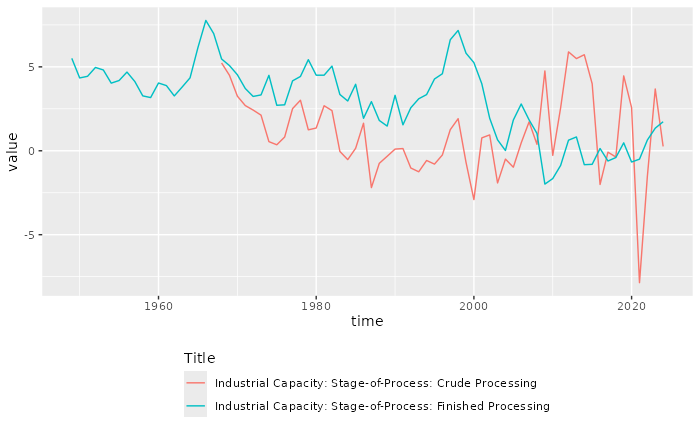

FRED
The St. Louis Fed Database FRED contain about +800k time series. To avoid filling up the Robonomist Server table of content, individual time series from FRED are not directly visible in the search function. Instead, you can list all “sources” and “releases” with:
data("fred/")
#> # Robonomist Database search results
#> id title lang
#> <r_id> <chr> <chr>
#> 1 fred/source=1 Board of Governors of the Federal Reserve System (US) en
#> 2 fred/source=3 Federal Reserve Bank of Philadelphia en
#> 3 fred/source=4 Federal Reserve Bank of St. Louis en
#> 4 fred/source=6 Federal Financial Institutions Examination Council (US) en
#> 5 fred/source=11 Dow Jones & Company en
#> 6 fred/source=14 University of Michigan en
#> 7 fred/source=15 Council of Economic Advisers (US) en
#> 8 fred/source=16 U.S. Office of Management and Budget en
#> 9 fred/source=17 U.S. Congressional Budget Office en
#> 10 fred/source=18 U.S. Bureau of Economic Analysis en
#> 11 fred/source=19 U.S. Census Bureau en
#> 12 fred/source=21 U.S. Department of Housing and Urban Development en
#> 13 fred/source=22 U.S. Bureau of Labor Statistics en
#> 14 fred/source=23 U.S. Department of the Treasury. Fiscal Service en
#> 15 fred/source=26 Haver Analytics en
#> 16 fred/source=31 Reserve Bank of Australia en
#> 17 fred/source=32 Deutsche Bundesbank en
#> 18 fred/source=33 Bank of Italy en
#> 19 fred/source=34 Swiss National Bank en
#> 20 fred/source=35 Central Bank of the Republic of Turkey en
#> 21 fred/source=36 U.S. Federal Housing Finance Agency en
#> 22 fred/source=37 Bank of Japan en
#> 23 fred/source=38 Bank of Mexico en
#> 24 fred/source=41 Freddie Mac en
#> 25 fred/source=42 Automatic Data Processing, Inc. en
#> 26 fred/source=46 Federal Reserve Bank of Kansas City en
#> 27 fred/source=47 Chicago Board Options Exchange en
#> 28 fred/source=48 Organization for Economic Co-operation and Development en
#> 29 fred/source=50 U.S. Employment and Training Administration en
#> 30 fred/source=53 U.S. Energy Information Administration en
#> # ℹ 396 more rowsThe database hierarchy is very simple: Sources contain releases, and releases contain time series.
To list all releases, for example, in source 1 (Board of Governors of the Federal Reserve System), call:
data("fred/source=1")
#> ⠙ Requesting data
#> ✔ Requesting data [1.8s]
#>
#> # Robonomist id: fred/source=1
#> # Title: Board of Governors of the Federal Reserve System (US)
#> # Vintage: 2024-06-12
#> # A tibble: 35 × 5
#> release_id name press_release link notes
#> * <int> <chr> <lgl> <chr> <chr>
#> 1 13 G.17 Industrial Production and Capacity… TRUE http… "For…
#> 2 14 G.19 Consumer Credit TRUE http… "For…
#> 3 15 G.5 Foreign Exchange Rates TRUE http… "For…
#> 4 17 H.10 Foreign Exchange Rates TRUE http… "For…
#> 5 18 H.15 Selected Interest Rates TRUE http… "For…
#> 6 19 H.3 Aggregate Reserves of Depository In… TRUE http… "The…
#> 7 20 H.4.1 Factors Affecting Reserve Balances TRUE http… "For…
#> 8 21 H.6 Money Stock Measures TRUE http… "For…
#> 9 22 H.8 Assets and Liabilities of Commercia… TRUE http… "For…
#> 10 52 Z.1 Financial Accounts of the United St… TRUE http… "The…
#> # ℹ 25 more rowsTo list all time series in the first release on the list (Industrial Production and Capacity Utilization), call:
data("fred/release=13")
#> ⠙ Requesting data
#> ⠹ Requesting data
#> ✔ Requesting data [3.4s]
#>
#> # Robonomist id: fred/release=13
#> # Title: G.17 Industrial Production and Capacity Utilization
#> # Vintage: 2024-05-16
#> # A tibble: 2,624 × 14
#> series_id title observation_start observation_end frequency frequency_short
#> * <chr> <chr> <chr> <chr> <chr> <chr>
#> 1 CAPB00004A Indu… 1948-01-01 2023-01-01 Annual A
#> 2 CAPB00004S Indu… 1948-01-01 2024-04-01 Monthly M
#> 3 CAPB00004SQ Indu… 1948-01-01 2024-01-01 Quarterly Q
#> 4 CAPB50001A Indu… 1967-01-01 2023-01-01 Annual A
#> 5 CAPB50001S Indu… 1967-01-01 2024-04-01 Monthly M
#> 6 CAPB50001SQ Indu… 1967-01-01 2024-01-01 Quarterly Q
#> 7 CAPB5610CA Indu… 1967-01-01 2023-01-01 Annual A
#> 8 CAPB5610CS Indu… 1967-01-01 2024-04-01 Monthly M
#> 9 CAPB5610CSQ Indu… 1967-01-01 2024-01-01 Quarterly Q
#> 10 CAPB562A3CA Indu… 1948-01-01 2023-01-01 Annual A
#> # ℹ 2,614 more rows
#> # ℹ 8 more variables: units <chr>, units_short <chr>,
#> # seasonal_adjustment <chr>, seasonal_adjustment_short <chr>,
#> # last_updated <chr>, popularity <int>, group_popularity <int>, notes <chr>To download a time series, use the get_data
function:
data_get("fred/CAPB00004S")
#> ⠙ Requesting get
#> ✔ Requesting get [2.7s]
#>
#> # Robonomist id: fred/CAPB00004S
#> # Title: Industrial Capacity: Manufacturing (SIC)
#> # Vintage: 2024-05-16 13:32:13
#> # A tibble: 916 × 7
#> series_id Title Frequency Units `Seasonal adjustment` time value
#> * <chr> <chr> <chr> <chr> <chr> <date> <dbl>
#> 1 CAPB00004S Industrial… Monthly Inde… Seasonally Adjusted 1948-01-01 16.2
#> 2 CAPB00004S Industrial… Monthly Inde… Seasonally Adjusted 1948-02-01 16.3
#> 3 CAPB00004S Industrial… Monthly Inde… Seasonally Adjusted 1948-03-01 16.4
#> 4 CAPB00004S Industrial… Monthly Inde… Seasonally Adjusted 1948-04-01 16.5
#> 5 CAPB00004S Industrial… Monthly Inde… Seasonally Adjusted 1948-05-01 16.6
#> 6 CAPB00004S Industrial… Monthly Inde… Seasonally Adjusted 1948-06-01 16.7
#> 7 CAPB00004S Industrial… Monthly Inde… Seasonally Adjusted 1948-07-01 16.8
#> 8 CAPB00004S Industrial… Monthly Inde… Seasonally Adjusted 1948-08-01 16.8
#> 9 CAPB00004S Industrial… Monthly Inde… Seasonally Adjusted 1948-09-01 16.9
#> 10 CAPB00004S Industrial… Monthly Inde… Seasonally Adjusted 1948-10-01 17.0
#> # ℹ 906 more rowsYou can also retrieve multiple time series by providing a vector of ids:
d <- data_get(c("fred/CAPB5610CS", "fred/CAPB5640CS"))
#> ⠙ Requesting get
#> ⠹ Requesting get
#> ✔ Requesting get [3.5s]
#>
d
#> # Robonomist id: fred/CAPB5610CS
#> # Title: Industrial Capacity: Stage-of-Process: Crude Processing
#> # Vintage: 2024-05-16 13:34:20
#> # A tibble: 1,604 × 7
#> series_id Title Frequency Units `Seasonal adjustment` time value
#> <chr> <chr> <chr> <chr> <chr> <date> <dbl>
#> 1 CAPB5610CS Industrial… Monthly Inde… Seasonally Adjusted 1967-01-01 72.1
#> 2 CAPB5610CS Industrial… Monthly Inde… Seasonally Adjusted 1967-02-01 72.4
#> 3 CAPB5610CS Industrial… Monthly Inde… Seasonally Adjusted 1967-03-01 72.8
#> 4 CAPB5610CS Industrial… Monthly Inde… Seasonally Adjusted 1967-04-01 73.1
#> 5 CAPB5610CS Industrial… Monthly Inde… Seasonally Adjusted 1967-05-01 73.4
#> 6 CAPB5610CS Industrial… Monthly Inde… Seasonally Adjusted 1967-06-01 73.7
#> 7 CAPB5610CS Industrial… Monthly Inde… Seasonally Adjusted 1967-07-01 74.1
#> 8 CAPB5610CS Industrial… Monthly Inde… Seasonally Adjusted 1967-08-01 74.4
#> 9 CAPB5610CS Industrial… Monthly Inde… Seasonally Adjusted 1967-09-01 74.7
#> 10 CAPB5610CS Industrial… Monthly Inde… Seasonally Adjusted 1967-10-01 75.1
#> # ℹ 1,594 more rows
ggplot(d, aes(time, value, color = Title)) +
geom_line() +
theme(legend.position = "bottom", legend.direction = "vertical")
The FRED api also allows some basic time series transformations with
the units parameter:
data_get(c("fred/CAPB5610CS", "fred/CAPB5640CS"), units = "pc1") |>
drop_na() |>
ggplot(aes(time, value, color = Title)) +
geom_line() +
theme(legend.position = "bottom", legend.direction = "vertical")
#> ⠙ Requesting get
#> ✔ Requesting get [2.9s]
#> 
Allowed values for units:
- lin = Levels (No transformation)
- chg = Change
- ch1 = Change from Year Ago
- pch = Percent Change
- pc1 = Percent Change from Year Ago
- pca = Compounded Annual Rate of Change
- cch = Continuously Compounded Rate of Change
- cca = Continuously Compounded Annual Rate of Change
- log = Natural Log
Similarly time series can be temporally aggregated with the
frequency and aggregation_method
parameters:
data_get(c("fred/CAPB5610CS", "fred/CAPB5640CS"), units = "pc1", frequency = "a", aggregation_method = "sum") |>
drop_na() |>
ggplot(aes(time, value, color = Title)) +
geom_line() +
theme(legend.position = "bottom", legend.direction = "vertical")
#> ⠙ Requesting get
#> ✔ Requesting get [2.9s]
#> 
Allowed values for frequency:
- d = Daily
- w = Weekly
- bw = Biweekly
- m = Monthly
- q = Quarterly
- sa = Semiannual
- a = Annual
Allowed values for aggregation_method:
- avg = Average
- sum = Sum
- eop = End of Period